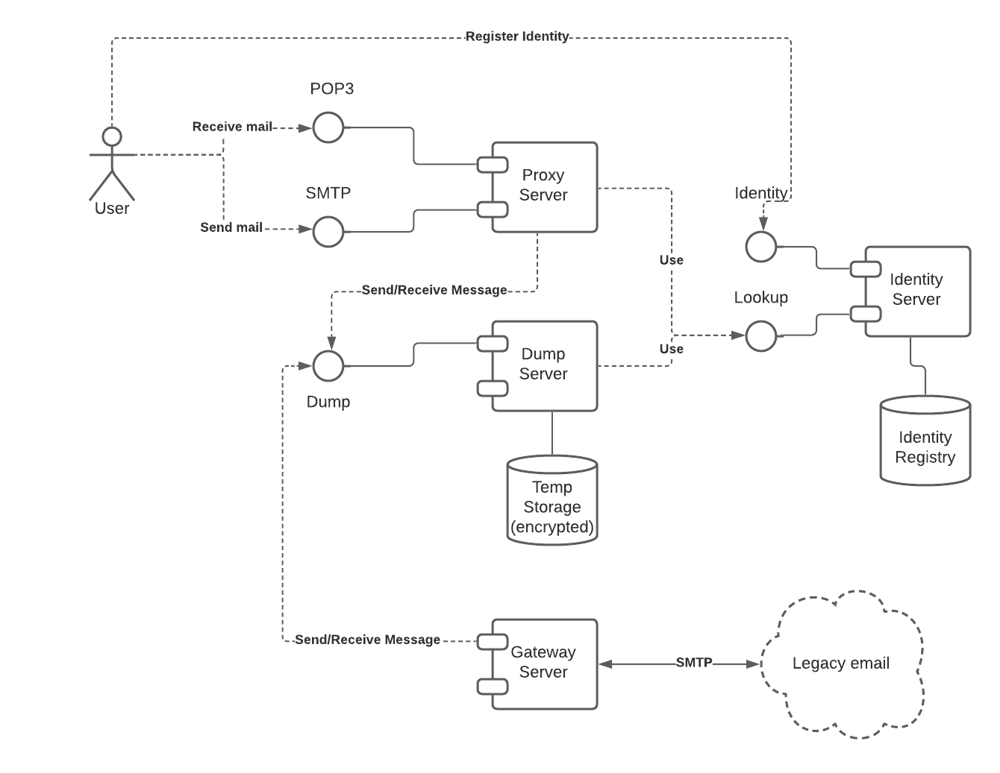

Anything in the universe can be modelled as objects exchanging messages. This includes rocks, cars, people, elementary particles and even you.
So let's assume you are one of these objects and you receive a bunch of messages. At some point, you might be interested in finding out who exactly is sending those messages.
One way to do it is to assign every object a unique name, and identify every sender by name. There are three tricky parts here:
One possible answer here is to have a central authority tasked with assigning globally unique names to objects and message delivery between objects. The problem with this approach is that everything is dependent on the existence and goodwill of such central authority. This is not the approach we want to take.
Another way to address this is to have a unique private/public key pair assigned to each object. Now every message sent out can be signed using the private key and verified using the public key.
Now, the object identity is reduced to private key control.
If you are signing all the outgoing messages with your private key, you might as well encrypt them with a unique key derived from your private key and the recipient's public key. This way, only the recipient can decrypt the message.
With this encryption in place, the question of how exactly messages get delivered becomes much less important. Since only the recipient can read the message, we might as well just dump all the messages into one giant data pile and let the recipients pick out their messages.
Finally, addressing objects by their public keys works well for machines but not so well for humans. We prefer short friendly names, so we might want to create a registry to record such names and which keys do they correspond to. But we must make sure that such a registry does not become the central authority that we are so eager to avoid.
The identity registry can also serve other purposes, for example, making message delivery easier by specifying service for each object. It can also be used to delegate certain functions from one key to another, and to disable keys that are compromised.
Ubikom is based on the following design goals:

The system components include:
The identity server is the most important component. It is currently centralized, but will be eventually distributed. It can be used on its own to support this and many other use cases. The rest of the components are there to implement the full working email backend.
Identity service is responsible for registering keys, names, and addresses. The information is stored in the identity registry, which will eventually be decentralized.
The identity service exposes two interfaces: identity registration and identity lookup:
In order to locate other users public key, we use the identity registry. The registry is a key-value store, which contains the following entities:
It is absolutely essential that the identity registry is decentralized and distributed, without any central authority controlling it. The decentralization will be achieved step by step:
Dump server stores encrypted messages temporarily, allowing recipients to pick up their messages as needed.
It has only two methods - to send and receive a message. Anyone can send a message, but only the owner of the private key can receive messages addressed to it.
To make everything working end-to-end without coding new email clients, we want to take advantage of the existing clients. A translation layer is required to convert gRPC calls (used between Ubikom components) to SMTP/POP3 calls used by email clients. The encryption and decryption is handled on the fly by the email proxy.
Ideally, each user would run email proxy on their machine, to keep control over their private keys. This requirement, however, would limit the adoption, and would not answer the question of how to handle potential web clients.
If we were to run public email proxy, we would need a way to transmit user credentials to the proxy, without risk of losing control of the user's private key. To do that, we use concept of limited authority delegation to the email proxy while keeping the ultimate authority over user's private key.
When a private key is created and registered, it is required to perform any action associated with this key, which include:
Email proxy only needs encryption and decryption. If we were to send user's private key to the public proxy, we would risk the key being compromised, allowing all the operations listed above.
To handle this situation, we introduce another key, which is registered as a child of the main key. Child keys are only allowed to perform encryption and decryption, but none of other operations.
Child key is transmitted to the email proxy in a secure way, and then used to encrypt outgoing messages and decrypt incoming messages.
If the child key is compromised, the user would use the main key to generate another email key, disable the previous one, and transfer name and address registration to the new key.
In fact, it might be a good idea to do email key rotation on a regular basis.
Let's consider how distributed identity registry will work. Here's a single registry node:
Each node has its own copy of the identity registry database, its private key and name (key and name are linked via a record in the identity database).
The node talks to other nodes and external users by receiving transaction requests. For each transaction, it performs the following processing:
The identity database uses multiple value versions to be able to tell the value at any given time (or at least for some reasonable time in the past). At predefined moment in time, each node generates a database snapshot (while still processing transactions). For the sake of the argument let's say it does it every 24 hours. So at 12:01 am each day, snapshot generator generates a database snapshot representing the exact state at that time.
After a snapshot is generated, it computes its hash (H0, H1, H2, etc.) and signs the snapshot with node's private key.
The identity registry snapshots are publicly available, so that users and other nodes can download snapshot representing the database state at any time.
The transaction log is also publicly available, so when a node is being bootstrapped, it downloads the latest snapshot from another node and then replays all the transactions that happened since.
After a snapshot is generate and its hash is known, each node sends a message to all other nodes containing a Zero-Knowledge Proof (ZKP) of this hash. This means that other nodes can either confirm that their snapshot has the same hash or not.
This continues for some fixed time (let's say 10 minutes). During this time, each node collects information to either confirm that it has the same snapshot as the majority of other nodes, or that it doesn't.
Let's say that our hash is confirmed by most of the other nodes (ideally all of them). When the consensus period is expired, each node will write down the signature block containing the hash of the snapshot and ZKP from all nodes confirming it. When a snapshot is confirmed by the majority of the nodes, it is considered to be done and the nodes proceeds with transaction processing until it's time to generate next snapshot.
In a situation when our snapshot differs from the majority of other nodes, we discard it, download the snapshot confirmed by the majority, and replay all transactions following the snapshot. When it's time to generate the next snapshot, we proceed as before.
There is also an unlikely scenario when a majority of nodes is unable to agree on the correct hash. This is mostly a theoretical possibility, but if it were to happen, the problem can either be resolved by discarding all changes since the previous snapshot, or by an operator intervention.